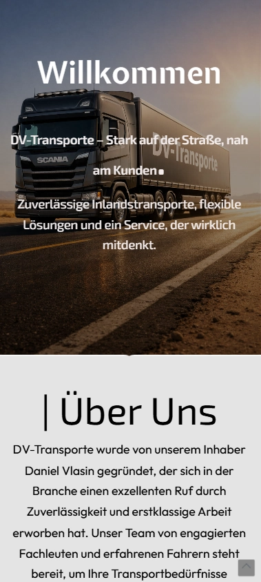

Besucher verstehen sofort, worum es geht.
Dein Angebot wird klar strukturiert, damit der Besucher nicht überlegen muss, ob er richtig ist.
Ich baue Websites und Landingpages, die sofort verständlich sind, hochwertig wirken und Besucher ohne Umwege zur Kontaktaufnahme führen.



Jede Sektion hat eine Aufgabe: Aufmerksamkeit gewinnen, dein Angebot erklären, Vertrauen aufbauen und die Kontaktaufnahme erleichtern.
Dein Angebot wird klar strukturiert, damit der Besucher nicht überlegen muss, ob er richtig ist.
Ein hochwertiger Look stärkt den Eindruck, dass dein Unternehmen zuverlässig, modern und kompetent arbeitet.
Desktop, Tablet und Handy werden so aufgebaut, dass Inhalte lesbar bleiben und Kontaktwege schnell erreichbar sind.
Buttons, Kontaktmöglichkeiten und wichtige Informationen bleiben dort, wo der Besucher sie braucht.
Gutes Webdesign ist kein Selbstzweck. Es zeigt deinem Kunden, was du anbietest, warum es sich lohnt und wie er den nächsten Schritt macht.
Besucher finden schneller, was wichtig ist — ohne sich durch unnötige Inhalte zu kämpfen.
Deine Website wirkt nicht wie eine Vorlage, sondern wie ein Auftritt, der zu deinem Unternehmen passt.
Vor der Übergabe werden Darstellung, Links, Bilder, Kontaktwege und mobile Ansicht geprüft.
Ob Handwerk, Beauty, Gastro oder Coaching: Entscheidend ist, dass Besucher schnell verstehen, warum sie genau dieses Unternehmen kontaktieren sollten.


Eine klare Standort-Seite, die Schulungsorte, Nutzen und Anfrageweg ohne Umwege verständlich macht.
Live ansehen ↗Handwerksleistungen übersichtlich dargestellt, mit starken Projektbildern und direktem Kontaktweg.
Live ansehen ↗
Ein hochwertiger Hausbau-Auftritt, der VR/3D-Planung, Vertrauen und Beratung klar zusammenführt.
Live ansehen ↗Ein Salon-Auftritt, der Atmosphäre, Beratung und Vertrauen schon auf den ersten Blick vermittelt.
Live ansehen ↗Eine Gastro-Website, die Angebot, Standort und Vorbestellung schnell verständlich macht.
Live ansehen ↗Wir arbeiten zuerst an Klarheit, dann an Wirkung. So entsteht ein Auftritt, der nicht nur modern aussieht, sondern für Besucher logisch funktioniert.
Was du anbietest, für wen es gedacht ist und warum es relevant ist, wird verständlich herausgearbeitet.
Bildwelt, Typografie, Farben und Abstände sorgen für einen Auftritt, der Vertrauen schafft.
Mobile Ansicht, Lesbarkeit, Klickwege, Formulare und technische Details werden vor der Übergabe kontrolliert.
Dann lass uns einen Auftritt entwickeln, der dein Angebot klar erklärt, hochwertig wirkt und Kontaktaufnahmen erleichtert.